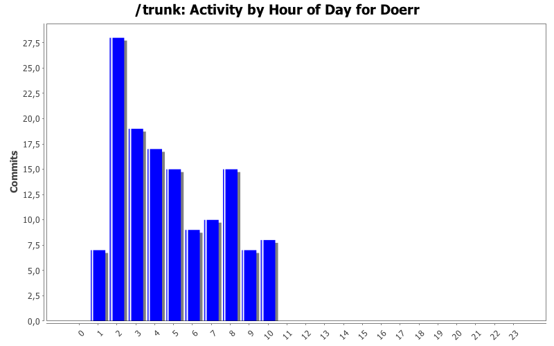
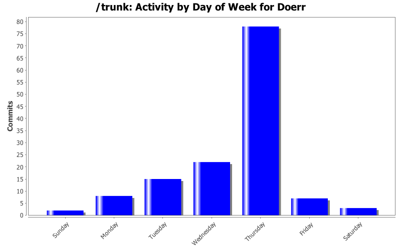
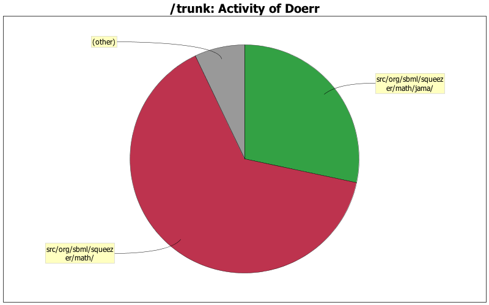

| Directory | Changes | Lines of Code | Lines per Change |
|---|---|---|---|
| Totals | 135 (100.0%) | 12216 (100.0%) | 90.4 |
| src/org/sbml/squeezer/math/ | 90 (66.7%) | 7892 (64.6%) | 87.6 |
| src/org/sbml/squeezer/math/jama/ | 7 (5.2%) | 3460 (28.3%) | 494.2 |
| src/org/sbml/squeezer/gui/ | 9 (6.7%) | 577 (4.7%) | 64.1 |
| test/org/sbml/squeezer/math/ | 14 (10.4%) | 167 (1.4%) | 11.9 |
| / | 8 (5.9%) | 74 (0.6%) | 9.2 |
| src/org/sbml/squeezer/resources/cfg/ | 1 (0.7%) | 18 (0.1%) | 18.0 |
| src/org/sbml/squeezer/util/ | 1 (0.7%) | 12 (0.1%) | 12.0 |
| src/org/sbml/squeezer/ | 1 (0.7%) | 11 (0.1%) | 11.0 |
| test/org/sbml/squeezer/test/math/ | 2 (1.5%) | 3 (0.0%) | 1.5 |
| src/org/sbml/squeezer/resources/img/ | 2 (1.5%) | 2 (0.0%) | 1.0 |

fixed a bug in the processing of assignment variables
15 lines of code changed in 1 file:
added the method processAssignmentVaribale to
determine how the quantity of a species during an event or assignment has to be interpreted
106 lines of code changed in 1 file:
Removed Value Objects.
Now the indices of the symbols are directly hashed over their id and a second HashMap was introduced to quickly get the index of a species' compartment
166 lines of code changed in 1 file:
adapted class due to changes in InitialAssignment
18 lines of code changed in 1 file:
changed compile NamedSBase and processing of velocities, so that there is no conflict with the processing of assignments
44 lines of code changed in 1 file:
fixed bug in processing of local parameter
17 lines of code changed in 1 file:
updated comments
76 lines of code changed in 1 file:
fixed some bugs in algebraic rule coversion
34 lines of code changed in 3 files:
corrected typo in method,
extended rebuilding of equations in the converter
133 lines of code changed in 2 files:
added ModelOverdeterminedException
66 lines of code changed in 1 file:
added exception handling for overdetermined models
62 lines of code changed in 2 files:
added try catch block
6 lines of code changed in 1 file:
bugfix
10 lines of code changed in 1 file:
added unimplemented methods & fixed typos
23 lines of code changed in 2 files:
subdivide creation of algebraic rules and creation of the matching into two classes
1076 lines of code changed in 3 files:
Improved some methods and added comments
237 lines of code changed in 1 file:
improved the implementation of the hopcroft karp algorithm
51 lines of code changed in 1 file:
added methods for augmenting paths
69 lines of code changed in 1 file:
started to implement the use of augmenting paths
231 lines of code changed in 1 file:
added some comments
377 lines of code changed in 2 files:
(65 more)